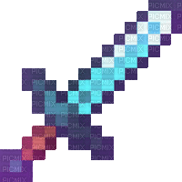
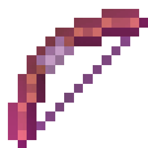
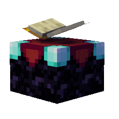
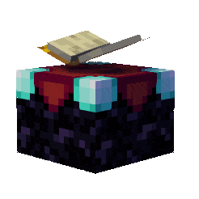
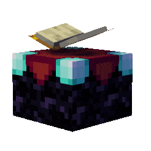

How start to play?
Get Privilegues!
- 1. - Download The Minectaft here.
- 2. - Open Minectaft and click "Play".
- 3. - Then, click in to the "Servers" button.
- 4. - Go down and click "Add Server"
- 5. - Then put the ip address: seriksworld.tk.
- 6. - If your port is 19132, click "Play".


 

